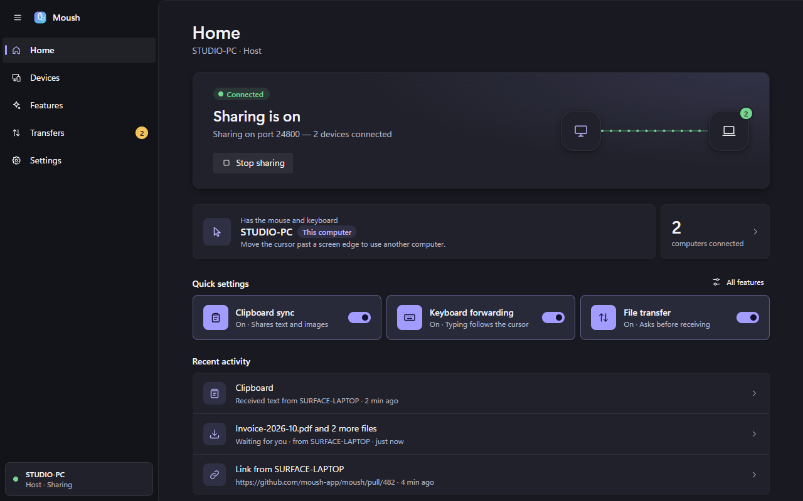

Seamless Edge Switching
Glide off the edge of your screen and control seamlessly hands over. Transitions between your host's own monitors continue to behave normally.
Move your cursor effortlessly off the edge of your desktop and continue seamlessly on your laptop. Mouse, keyboard, clipboard synchronization, and encrypted file transfer — powered by a single high-efficiency Rust binary.
winget install Moush
Copy
Move your mouse freely across the virtual monitors below to test instant input handover and features.
One unified binary acts as host and client. Everything connects over a single encrypted TCP stream with zero polling on the critical input path.
Glide off the edge of your screen and control seamlessly hands over. Transitions between your host's own monitors continue to behave normally.
Real-world monitor dimensions and DPI scales are detected automatically. A 150% scaled laptop sits next to 100% monitors at exact physical proportions.
Keystrokes follow the cursor instantly. System shortcuts like Alt+Tab and Win act on the computer you are actively focused on with zero key-sticking.
Text, rich text, and bitmap images sync bidirectionally in real time. Password managers are automatically excluded for security.
Drag files directly onto the window. Streamed in chunks over the encrypted connection with SHA-256 integrity verification and approval prompts.
Share snippets and links with a single click. URLs automatically open in the default browser of the receiving computer.
Cryptographically secure pairing with mutual authentication. New devices require verifying a matching 6-digit code on both screens.
Toggle clipboard, file transfer, or text dispatch globally or individually per paired machine. Control only acts when both sides consent.
Built with Rust and Tauri. Consumes only ~7 MB of memory, lives unobtrusively in the Windows notification tray, and never impacts system performance.
Mica-inspired acrylic materials, smooth animations, light and dark themes, and high-contrast accessibility baked into every view.

Install Moush on each computer you want to control. Both machines must be connected to the same local network or Wi-Fi.
Run the single installer executable. It installs cleanly per-user and requires zero administrator privileges.
On the machine with the mouse and keyboard, choose Host. On the other computer(s), choose Client.
Verify that the six-digit code matches on both screens and click Allow. Paired devices reconnect automatically.
In Devices → Screen layout, drag your laptop monitor to match your desk. The shared edge turns cyan.
Choose your preferred installation pathway for Windows 10 & 11:
winget install MoushEverything you need to know about networking, security, and multi-monitor setup.
No. Moush operates entirely on your local area network (LAN). There are zero accounts, zero cloud servers, zero telemetry, and zero subscriptions. Your input and clipboard never leave your local subnet.
As long as both computers are on the same local network subnet and your router does not isolate Wi-Fi clients (Client Isolation / Guest mode), Moush discovers and connects automatically over UDP/TCP with sub-millisecond responsiveness.
Moush is built with native Rust using low-level Windows hooks (WH_MOUSE_LL and WH_KEYBOARD_LL) and direct input injection (SendInput). Communication occurs over an event-driven TCP socket with TCP_NODELAY enabled, bypassing all polling and buffering overhead.
Windows UIPI (User Interface Privilege Isolation) restricts non-elevated apps from sending input to elevated windows. To control administrator prompts or elevated applications on the client, simply run Moush as Administrator on the client PC. Note that the Windows Secure Desktop (Ctrl+Alt+Del) cannot be accessed remotely by OS security design.
Press the Scroll Lock key or use the hotkey Ctrl + Alt + Esc to lock the cursor to your current computer or immediately snap it back to the host.